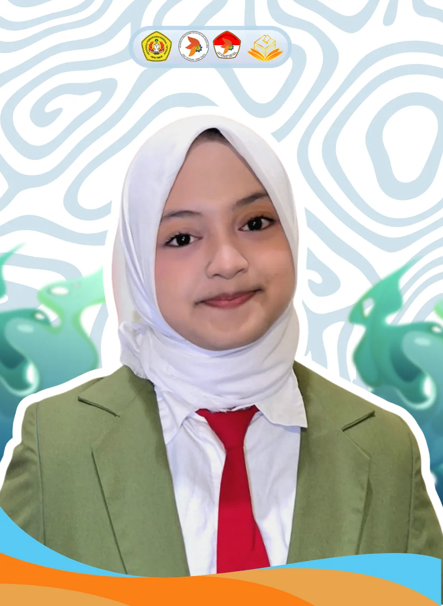
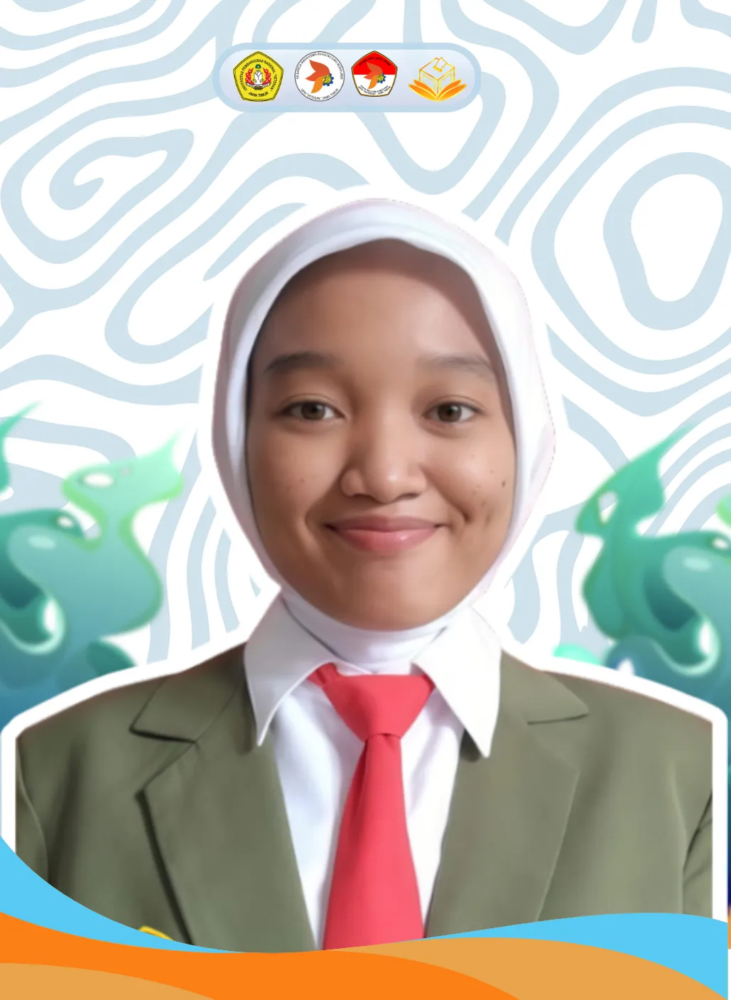
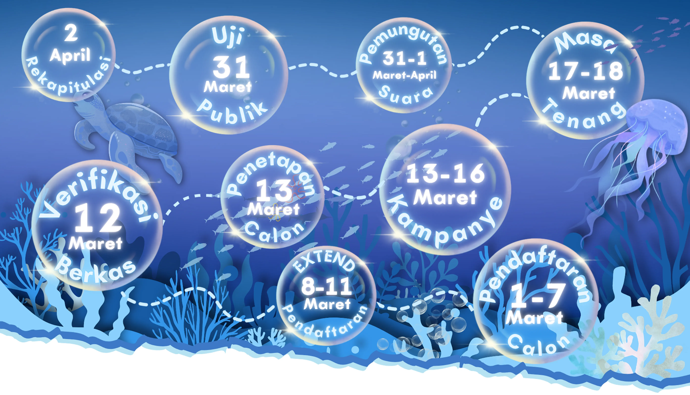

“Diving into Digital Innovation for Democratic Justice”
"PEMIRA FASILKOM 2026" merupakan kegiatan rutin tahunan berupa pemilihan Calon Ketua dan Wakil Ketua BEM Fakultas Ilmu Komputer serta memilih Calon Keanggotaan BLM Fakultas Ilmu Komputer. Seluruh Sivitas Akademik diundang untuk mendengarkan visi misi kandidat, memahami potensi para kandidat, berdiskusi tentang isu-isu kampus, dan yang terpenting adalah menggunakan hak suara mereka.
Klik kartu untuk melihat visi & misi

↩ klik untuk lihat visi & misi
Calon Ketua & Wakil BEM
Mewujudkan BEM Fakultas Ilmu Komputer sebagai wadah pengembangan akademik, potensi mahasiswa, dan kolaborasi dalam menghadapi dinamika perkembangan teknologi dengan berlandaskan nilai Tri Dharma Perguruan Tinggi.
↩ klik untuk kembali
Klik kartu untuk melihat visi & misi
↩ klik untuk visi & misi
Calon BLM No. 1
Menjadikan BLM sebagai wadah yang aktif, terbuka, dan dekat dengan mahasiswa dalam menyalurkan aspirasi serta mendorong perubahan yang positif di lingkungan kampus.
▸Mendengarkan dan menampung aspirasi mahasiswa dengan terbuka.
▸Menjalin komunikasi yang baik antara mahasiswa dan pihak kampus.
▸Berkontribusi aktif dalam kegiatan yang mendukung perkembangan mahasiswa.
▸Bekerja secara bertanggung jawab dan menjunjung nilai kebersamaan dalam organisasi.
↩ klik untuk kembali
↩ klik untuk visi & misi
Calon BLM No. 2
Optimalisasi
▸Melakukan efficiency,dan perbaikan sdm
↩ klik untuk kembali
↩ klik untuk visi & misi
Calon BLM No. 3
Menjadikan BLM Fasilkom sebagai lembaga legislatif mahasiswa yang aspiratif, transparan, dan aktif dalam memperjuangkan kepentingan mahasiswa Fasilkom
▸Menampng dan menyalurkan aspirasi mahasiswa fasilkom secara terbuka
▸Mengawasi kinerja lembaga kemahasiswaan agar berjalan sesuai aturan
▸Menjalankan fungsi legislasi secara profesional dan bertanggung jawaban
↩ klik untuk kembali

↩ klik untuk visi & misi
Calon BLM No. 4
Menjadi pribadi yang terus bertumbuh,berani mengambil tanggung jawab, dan mampu memberi dampak positif bagi lingkungan sekitar melalui sikap jujur,kerja keras, dan ketekunan dalam setiap proses yang dijalani.
▸Menggunakan setiap pengalaman, termasuk kegagalan, sebagai kesempatan untuk berkembang.
▸Menjalankan setiap amanah dengan penuh tanggung jawab, kejujuran, dan komitmen yang tinggi.
▸Berkontribusi menciptakan organisasi yang tidak hanya aktif, tetapi juga memiliki nilai, arah, dan tujuan yang jelas.
▸Mendengarkan serta memahami aspirasi mahasiswa dengan sikap terbuka dan menghargai berbagai sudut pandang.
▸Berkontribusi melalui pemikiran, ide, dan kerja nyata untuk mendukung terciptanya organisasi yang lebih baik.
↩ klik untuk kembali
↩ klik untuk visi & misi
Calon BLM No. 5
Optimalisasi
▸Fokus pada output dengan kualitas terbaik
↩ klik untuk kembali
